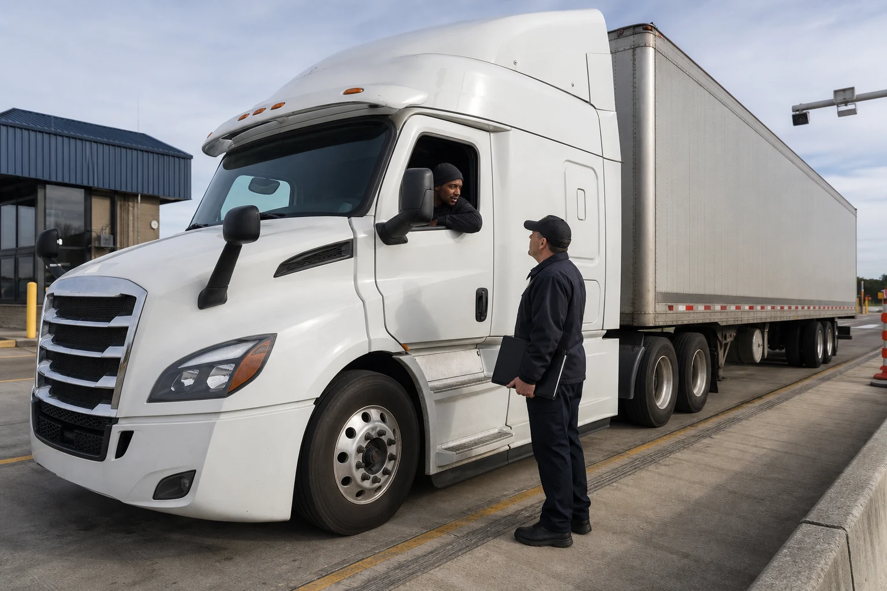
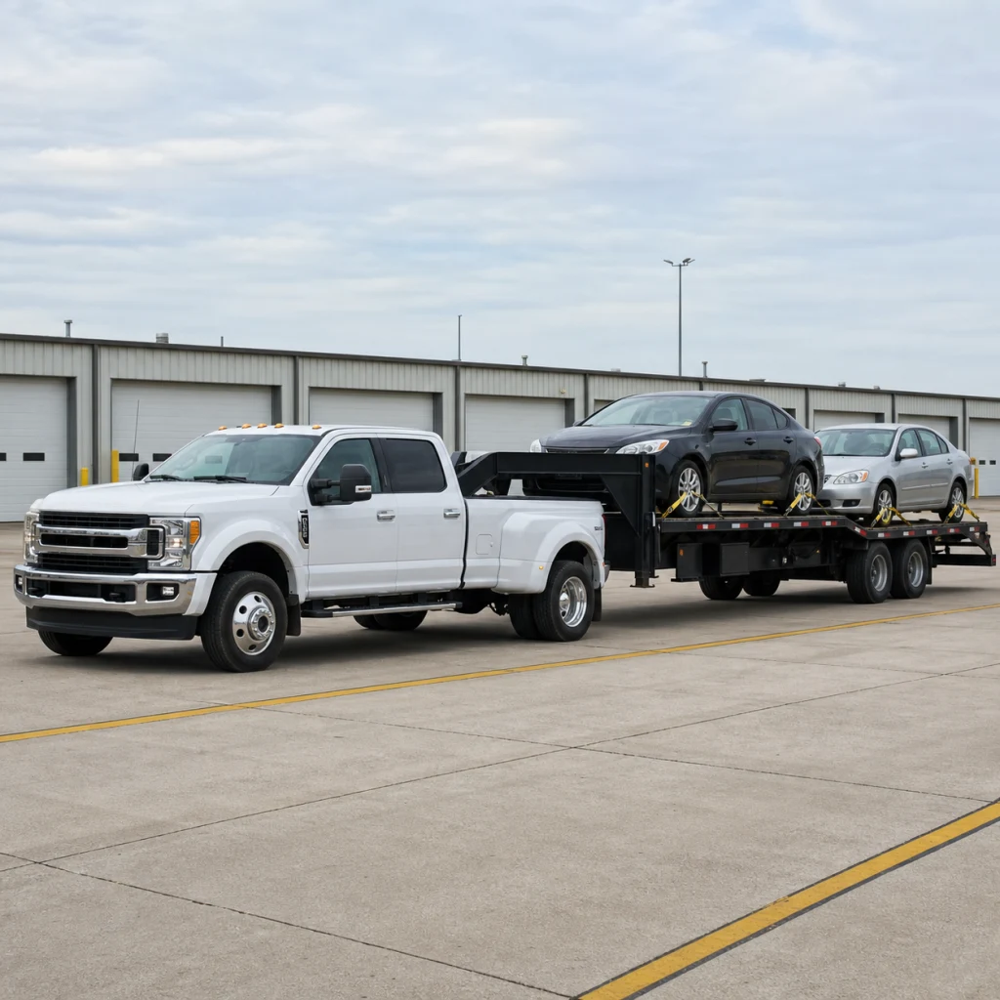
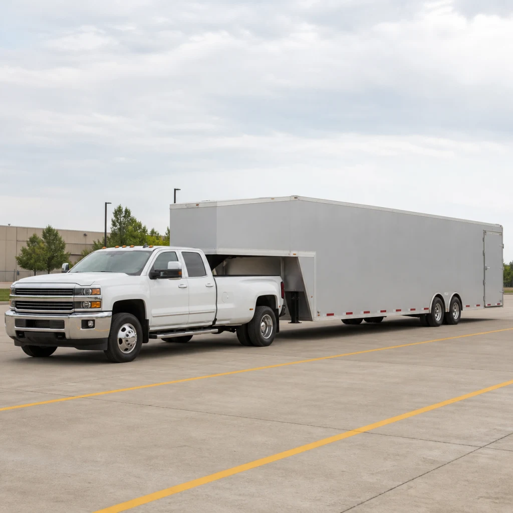

Короткие понятные занятия. Начните с карточек, если не уверены.
Ответьте как на работе
Практика
Сначала короткая попытка, затем подсказка и безопасный правильный путь.
Разговорная практика
Лаборатория ответа
Скажите целевую реплику без подсказки, затем прослушайте свою запись.
Целевая репликаCould you repeat that more slowly, please?
Записи пока нет.
Быстро найти на работе
Справочник
Официальная графика, учебные документы и короткие конспекты разделены явно.
Сейчас: найдите нужную фразу. Для тренировки ответа откройте Карточки.
1200 единиц курса
Словарь курса
Распознавание техники
Три рабочие конфигурации
Учебные иллюстрации

Tractor-trailer
Тягач, седельно-сцепное устройство (fifth wheel) и отдельный полуприцеп. Проверяйте тягач и прицеп как две части автопоезда.

Hotshot open
Тяжелый пикап со сдвоенными задними колесами и открытый прицеп gooseneck. Груз и крепления видны снаружи.

Hotshot enclosed
Тяжелый пикап со сдвоенными задними колесами и закрытый прицеп gooseneck. Контролируйте угол рампы и зазоры до крыши, зеркал и дверей.
Сейчас: введите английскую единицу до показа модели. Осталось: 1.
Активное вспоминание
Карточки
Truck Track1 / 1200
Переведите на английский
Pull into the inspection lane.
Сейчас: выберите вопрос или порядок инспекции. Завершение: самостоятельный ответ или пройденный блок.
CVSA + FMCSA ELP
Инспекции, вопросы и команды
Практический фокус: уровни I, II и III. Уровни IV, V, VI и VII нужны для понимания назначения проверки. Level VIII изучается как электронная проверка, которая пока проходит эксплуатационное тестирование.
Задание 1
Ответьте своими словами, сохранив ключевой смысл и значения.
Учебный ответ
Проверяемый статус
Тренировка только на английском
ELP на дороге: порядок действий
Политика FMCSA, 16 апреля 2026
PПодготовка: безопасная остановка
Остановитесь безопасно, опустите окно и держите документы доступными.
1ELP, этап 1: семь функций
Без переводчика: безопасно подтвердите команду, назовите тягач или пикап и прицеп, место отправления, пункт назначения, груз, перевозчика или работодателя и текущий duty status или HOS.
2ELP, этап 2: дорожные знаки
К знакам переходят только после успешного этапа 1. Назовите смысл знака и нужное действие.
SДополнительная тренировка: документы
Покажите только запрошенный документ и назовите его.
SДополнительная тренировка: команды
Попросите повторить непонятную команду. Выполняйте ее только после того, как поняли.
Сначала дайте семь ответов этапа 1 без перевода.
Этап 2 оценивает только карточки, где нужно прочитать английский текст. Все 49 FHWA SVG и 16 TRAINING DMS остаются в справочнике.
Порядок тренировки соответствует двум этапам проверки ELP.
Сейчас: услышьте намерение и дайте ответ. После ответа вы сразу получите результат.
40 рабочих сцен
Ситуации
Доступно 0 из 40
Недоступные сцены остаются в списке с указанием причины.
Приоритет 1
Сейчас: назовите смысл и действие. Готово после письменного ответа до показа модели.
Распознавание по MUTCD
80 знаков в полном справочнике
49 официальных знаков FHWA, 15 переменных карточек и 16 учебных электронных табло.
Дайте письменный ответ до показа смысла.
Сейчас: найдите запрошенное поле. Введите значение до показа ответа.
Синтетический учебный набор
24 документа водителя
Папка документов
Что подготовить до проверки
Учебный список
Фактический набор зависит от перевозчика, машины, груза, маршрута и юрисдикции. Все образцы ниже синтетические.
TRAINING SAMPLE, NOT VALID
Учебный ответ
Сейчас: откройте один урок и ответьте до показа примера. После ответа вы сразу получите результат.
21 урок общения
Профессиональная основа
Необязательно: можно выйти в любой момент. Не менее 12 заданий по четырем навыкам, около 7 минут.
Спокойная стартовая проверка
Подберем удобный маршрут
Результат поможет выбрать первые задания. Это не официальная оценка CEFR или ACTFL.
Сейчас: повторите до 3 трудных пунктов. Готово после новой самостоятельной попытки.
Автоматическая очередь
Журнал ошибок
Здесь появляются карточки с оценкой «Трудно» или «Снова», задания с подсказкой или неудачным ответом, ошибки диагностики и выбора действия. Общая кнопка открывает первый пункт очереди.
Сейчас: выберите безопасный ответ. 5 ситуаций.
Ситуация 1
Сейчас: выберите нужный конспект.
Рабочий блокнот
6 графических конспектов
01
Инспекция на дорогеПорядок контакта
Безопасно остановиться
Опустить окно и слушать команду
Показать только запрошенные документы
Ответить на вопросы и выполнить понятные команды
Не двигаться, пока команда не понятна
02
ELPПодготовка и два этапа оценки
Подготовка: безопасная остановка
Этап 1: вопросы и команды на английском
Этап 2: дорожные знаки, только после успешного этапа 1
Отдельная тренировка: документы и команды
03
ДокументыЧто показать
Фильтрованный список: только документы текущего профиля и включенных условий
Для рейса: BOL, разрешения, весовой талон и документы о доставке после включения соответствующего условия
По условиям: CDL, ELD, медицинские документы, hazmat, oversize и другие применимые записи
TRAINING CHECKLIST, NOT A DOCUMENT04
Осмотр перед рейсомКороткая последовательность
Документы и маршрут
Органы управления в кабине и свет
Моторный отсек
Сцепка и прицеп
Шины, тормоза, груз и финальный обход
05
Экстренный звонокЧто сказать
Вы сейчас в безопасности?
Точное место и направление движения
Состояние тягача, прицепа и груза
Травмы, пожар или перекрытая полоса
Повторить инструкции и номер для обратного звонка
06
HotshotOpen и enclosed отдельно
OPEN
Видимый груз, проверенные точки крепления, ремни или цепи, их прокладка и повторная проверка.
ENCLOSED
Угол рампы, зазоры до крыши, зеркал и дверей, помощник и внутреннее крепление.
Иллюстрация не заменяет проверенную процедуру крепления груза.
Ваш прогресс
Результаты курса
Ежедневный маршрут
Сколько времени есть?
Настройки курсаУсловия рейса и оборудованияОткрыть и изменить
Можно менять и пропускать
Маршрут на 7 дней
Резервная копия
Скачайте JSON, чтобы перенести прогресс или восстановить его позже.
Начать заново
Удаляет только прогресс Truck Driver English. Исходный English Basic не затрагивается.
Инструкции
Полное руководство на русском, украинском и белорусском языках, MIT License и NOTICE.